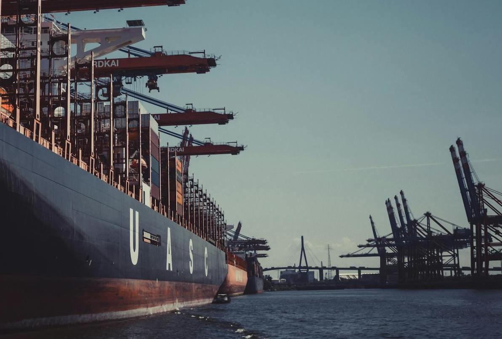

Container vessels are a common sight in ports around the world, but this one is particularly well-stocked. They're a vital part of the global supply chain, but where is this one moored? In which city would you find this port?
